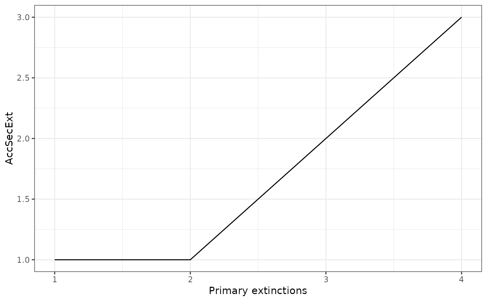
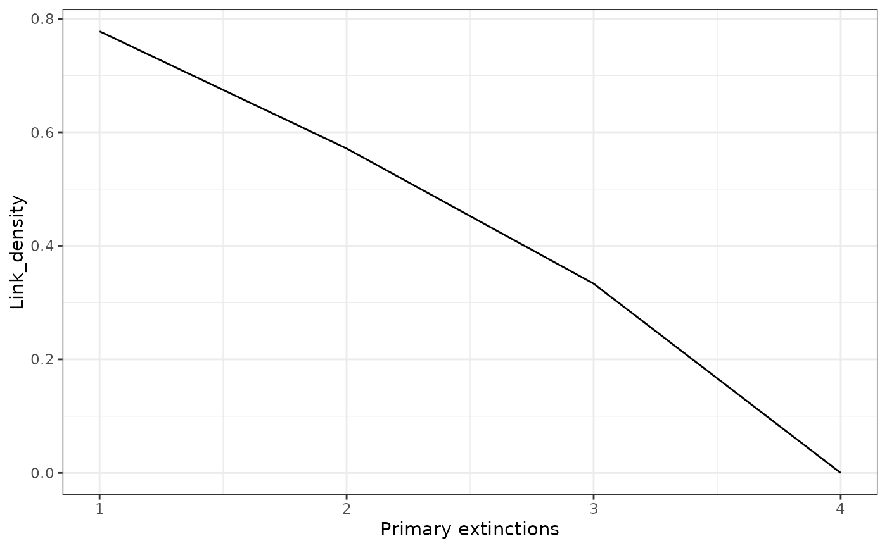

It takes a NetworkTopology class object and plots the network index after every extinction
Examples
# If you don't specify the y variable it will plot the secondary extinctions
# by default
data("net")
history <- SimulateExtinctions(Network = net, Method = "Mostconnected")
#>
|
| | 0%
|
|======= | 10%
|
|============== | 20%
|
|===================== | 30%
|
|============================ | 40%
|
|======================================================================| 100%
#> Warning: Your network became completely unconnected before all primary extinctions were simulated. This happened at extinction step 4 out of 10
ExtinctionPlot(History = history$sims)

# You can also specify the variable to be ploted in the y axis
ExtinctionPlot(History = history$sims, Variable = "Link_density")
